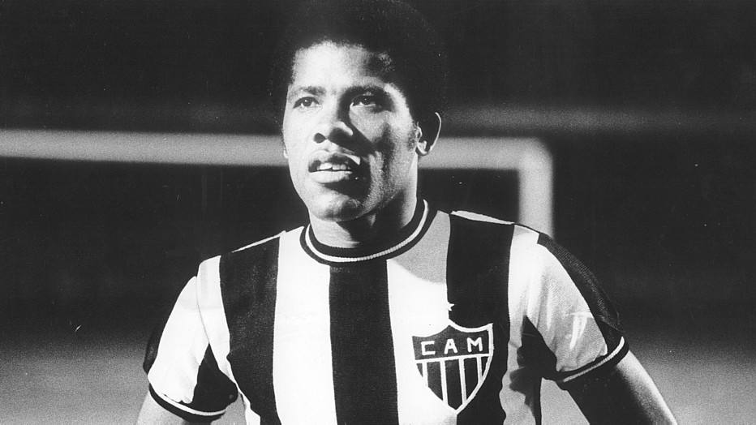
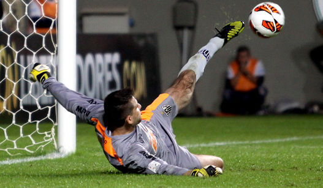

Dadá Maravilha jogou pelo Galo entre os anos de 1968 e 1979. Em 290 jogos, se tornou o segundo maior artilheiro do clube, ao marcar 211 gols. Foi o autor de um dos gols mais significativos da história do clube, no dia 19 de dezembro de 1971, na final do Campeonato Brasileiro contra o Botafogo-RJ no Maracanã. Além disso, foi artilheiro do clube em duas edições do Nacional: 1971 e 1972, com 15 e 17 gols, respectivamente. Ao todo, passou por 16 clubes em 21 anos de carreira.  Dadá sempre foi lembrado por suas frases e entrevistas, abaixo você verá uma entrevista de Dadá para Falcão, onde ele contará o seu segredo para marcar muitos gols. Falcão: - Deixa o Dário contar ai, o que ele fazia antes dos jogos, no início da sua carreira. Dadá Maravilha: – Não, não foi só no início, não. Tudo. Eu sempre ia antes do jogo, lá no banheiro, na pontinha dos pés, e batia umazinha. Falcão: (gargalhadas) Mas por quê, cara? Dadá: Ah, ficava levinho e parava no ar, Falcão. Eu sempre fazia isso, Falcão. Aí teve um jogo, o Lola ficou me sacaneando. Falando: “Ah, Dadá, você só faz gol porque se masturba”. Eu disse: “Que nada, eu sou o Dadá! Que nada!” Aí, contra o Uberaba eu não vou me masturbar e vou fazer. Primeiro tempo: 2 x 0 Uberaba. Eu não jogando nada e a torcida me vaiando. Aí, eu saí correndo e a imprensa em cima de mim. “Dadá!” E eu: “Não, não, tenho que ir para o banheiro”. Os caras: “Não, ele tá com dor de barriga”. Que nada. Fui lá e bati uma punhetinha legal. Quando deu 15 minutos do segundo tempo tava 3 x 2 Atlético. Três gols de quem, Falcão? Falcão: Três do Dadá. Dadá: Três do Dadá. Porque eu tava levinho. Tava uma pena, tava uma pluma. Aí, nunca mais deixei de tocar minhazinha. No Inter mesmo eu ia ao banheiro e tocava umazinha. Falcão: (gargalhadas) Mas não tinha outro jeito de ficar levinho, hein? Dadá: Ah, não tinha, não tinha. Se tivesse outro jeito seria melhor. Eu concordo que seria até mais fácil.
O goleiro Victor, do Atlético-MG, concedeu entrevista ao canal humorístico Desimpedidos, no Youtube, e em um papo descontraído, o arqueiro do Galo não poderia deixar de comentar a histórica defesa com os pés nas quartas de final da Libertadores de 2013, contra o Tijuana. O pênalti marcado aos 47 minutos do 2º tempo deixou por alguns minutos o Independência em silêncio. Victor revela o que passou pela sua cabeça ao ver o árbitro Patricio António Polic Orellana apontar para a marca da cal. “A partir do momento que o juiz apitou, eu botei a bola na cabeça e pensei, fudeu....“, disse. “Eu fui para o gol, tive uma conversa com o barbudão lá de cima e pedi para ele dar uma força (risos). Muito brincam que este foi o gol mais importante da história do Galo“, completou.
O dia era 24 de Julho de 2013, mais uma vez precisando reverter uma desvantagem considerável contraída na primeira partida da decisão da Libertadores frente ao Olimpia no Paraguai por 2 a 0, o time na época comandado por Cuca fez o improvável. E, evidentemente, engrossou os motivos para o tão aclamado coro do “Eu Acredito!” pelo torcedor do clube mineiro. O clima era de pressão para o Atlético e feita pelo Atlético já que, precisando do resultado, os donos da casa que tinham como camisa 10 Ronaldinho Gaúcho encurralaram o Olimpia buscando a abertura do marcador. Mas foi na etapa complementar que o “quase impossível” se tornava viável. Logo no primeiro minuto, a zaga olimpista falhou na hora de Wilson Pittoni fazer o corte e Jô, o artilheiro da Liberta, abriu a contagem para balançar o Mineirão. O jogo seguia seu curso com o abafa atleticano sendo parado por um Martín Silva (atual arqueiro do Vasco) inspirado e a bola que teimava em não entrar. No entanto, aos 36, o centroavante Juan Carlos Ferreyra chegou a driblar um desesperado Victor que saia do gol para fazer a cobertura da zaga, mas escorregou e deu alívio aos torcedores que praticamente prenderam a respiração ao ver o lance. Era o ponto que faltava para mostrar que a noite conspirava a favor do time brasileiro, colocando os dois pés pelo menos na prorrogação aos 42 minutos quando, de cabeça, o zagueiro Leonardo Silva tocou de cabeça para vencer o arqueiro do Olimpia. Após um tempo extra de loucura com bola na trave e mais pressão do Galo, a decisão acabou indo para as cobranças de pênalti onde, mais uma vez, a estrela de Victor brilhou. Defendendo a penalidade de Herminio Miranda e contando com a cobrança no travessão de Matías Giménez, o Atlético-MG se sagrou campeão e eternizou o “Eu Acredito”.